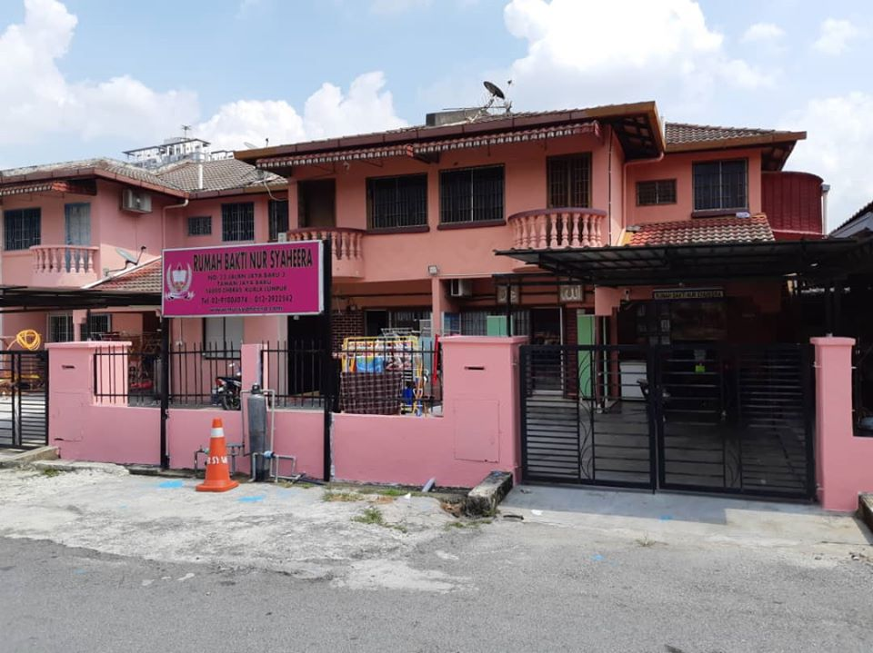
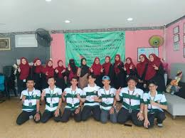
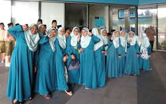
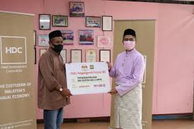
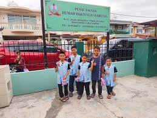

What We Love to Do as an Orphan Community
- Organize weekly group activities to foster teamwork and bonding.
- Engage in creative arts such as painting, drawing, and crafting.
- Participate in educational workshops to enhance learning and life skills.
- Enjoy sports and outdoor games to stay active and healthy.
- Host storytelling sessions to inspire and share personal experiences.
- Collaborate in community service projects to give back and build empathy.
- Celebrate cultural festivals and events to connect with traditions.
- Attend motivational talks and mentoring sessions for guidance and encouragement.
- Form study groups to support academic progress and peer learning.
- Organize charity drives to collect and distribute essentials for the less fortunate.
- Engage in gardening and environmental activities to promote sustainability.
- Create a supportive and loving environment for personal and community growth.
Our Community Aspirations and Activities
- Participating in weekly storytelling sessions to share life lessons and experiences.
- Creating art projects like painting murals or crafting to express creativity.
- Attending educational workshops to enhance knowledge and skills.
- Organizing nature walks to appreciate and learn about the environment.
- Writing letters of gratitude to our supporters and sponsors.
- Hosting cultural celebration days to learn about different traditions and customs.
- Practicing teamwork through group sports like soccer, volleyball, or badminton.
- Exploring books during community reading hours to foster a love of learning.
- Preparing meals together to bond and develop practical life skills.
- Celebrating personal achievements and milestones to encourage one another.
- Cleaning and beautifying shared spaces to build a sense of responsibility and pride.
- Organizing peer mentorship programs where older children guide the younger ones.




|